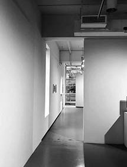
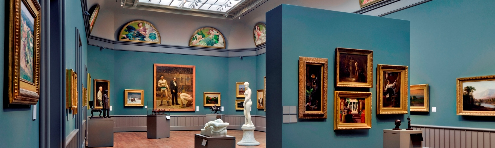

The School of Art galleries in Green Hall provide a year-round forum for the exhibition of work by students, faculty, and special guests in the four graduate departments of the School and the undergraduate program. reen Hall Gallery at 1156 Chapel Street is open to Yale community members. Receptions are the only time the galleries are open to the general public.
Upcoming Gallery Exhibits:
Spring 2026 in Green Hall Gallery
Painting/Printmaking MFA Thesis Exhibition (Group 1) January 17 - 27, 2026
Public reception: Friday, January 23rd from 6–8PMPainting/Printmaking MFA Thesis Exhibition (Group 2) February 7 – 17, 2026
Public reception: Friday, February 13th from 6–8PMSculpture MFA Thesis Exhibition (Group 1) February 28 – March 9, 2026
Public reception: Friday, March 6th from 6–8PMSculpture MFA Thesis Exhibition (Group 2) March 21 – 29, 2026
Public reception: Friday, March 27th from 6–8PMGraphic Design MFA Thesis Exhibition April 9 – 17, 2026
Public reception: Friday, April 17th from 6–8PMUndergraduate Thesis Exhibition April 26 – May 3, 2026
Public reception: Friday, May 1st from 6–8PMPhotography MFA Thesis Exhibition May 12 – 19, 2026
Public reception: Friday, May 15th from 6–8PMYale School of Art’s Fall 2025 receptions are open to the public. During all other gallery hours, exhibitions are only open to the Yale Community (current ID holders) and their invited accompanied guests.